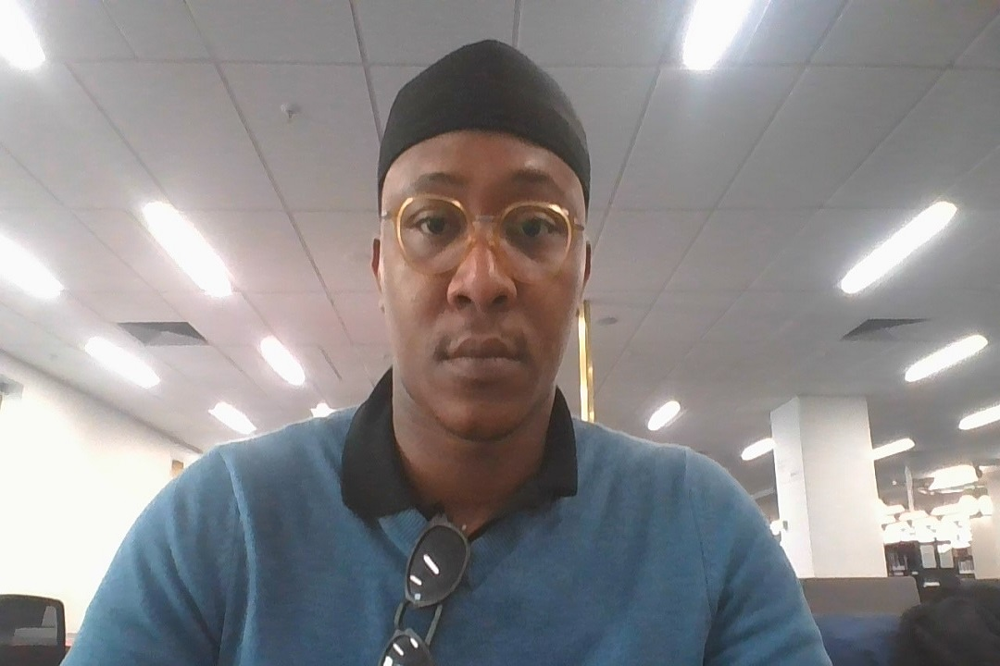
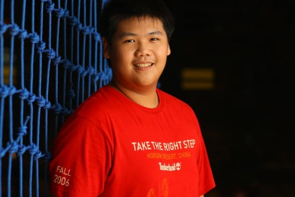
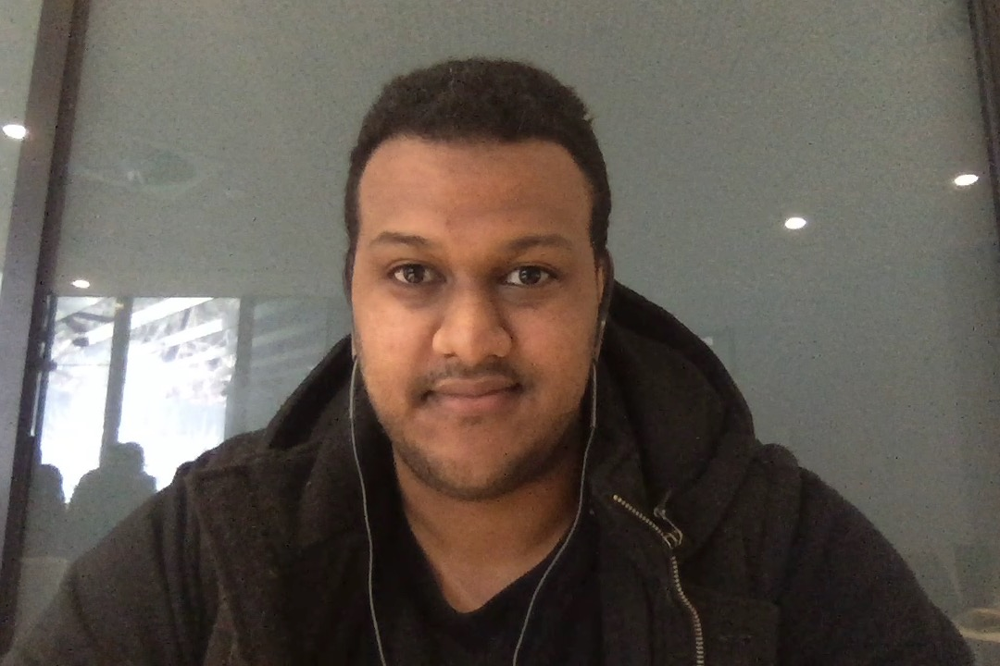
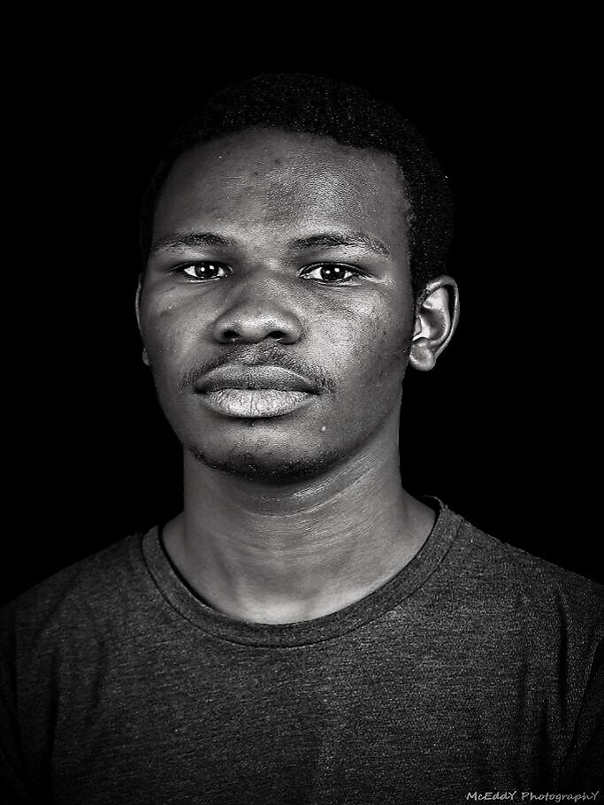
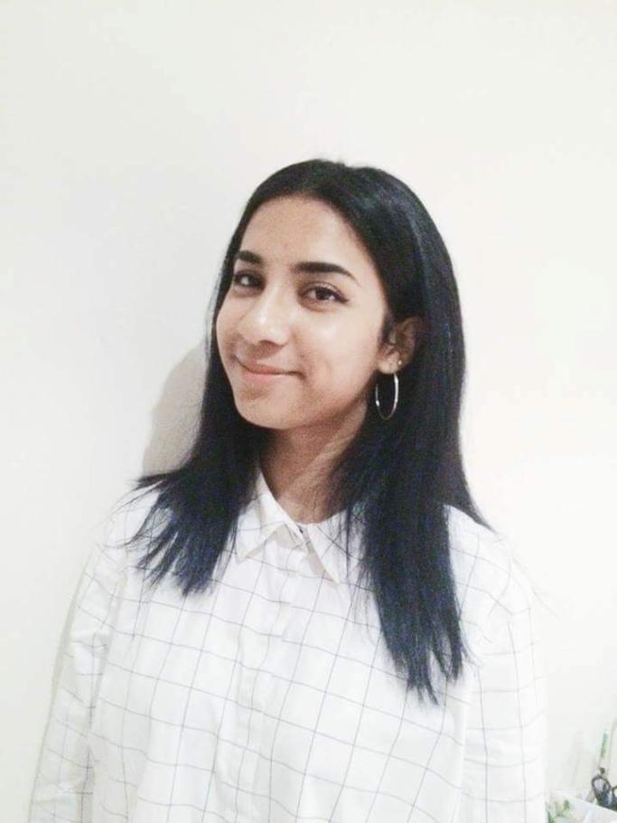

Emmanuel Nwordu
Hello people, my name is Emmanuel Nwordu and i am an undergraduate student of RMIT University,
i come from the southern part of Nigeria where we have rich oil fields and also the best crude oil in the world known as Bonny Light Crude.
I love playing strategic games that help
increase the rate at which my brain
computer processes data, chess mostly, but at times i dive into the vast world of computer strategy games.
I started out on my I.T. adventure trying my best to get as much knowledge as i could including networking, database administration and web programming, as i always wanted to

Davin Ie
Hello!
My name’s Davin or I go by Dave. I come from Indonesia which is located just north of Australia and I lived in the city called Jakarta. My family is of Asian-Chinese
background and holds tradition in high regard. My hobbies involve watching movies, especially comedy such as; Brooklyn Nine-Nine,
or Community, and playing games, some titles i’ve been enjoying are; Undertale, Dead by Daylight, and Starcraft 2.
My experience with IT is quite scarce currently after all this is my first year into Bachelor of Information Technology at RMIT.
In terms of skills i’ve got a basic understanding of HTML and some experience into Java. The world of IT to me is
quite broad and I honestly am unable to pinpoint a certain category in which i enjoy, that said i’ve loved every aspect of it and is eager to learn more.

Daniel Dominique
Hi all, my name is Daniel Dominique and a first gen Australian.
In my spare time I enjoy building computers. I enjoy all aspects of the process from; designing what I want to build,
sourcing parts for the build, building the computer and selling it! I first started building computers from need.
My interest in IT is with the role that it plays in the lives of users.
My experience in the field is limited, having only dabbled with HTML
and CSS during my last assignment when creating my website. I have also begun to learn java and python.
Min Chul Shin
Hello everybody! My name is Min chul shin. I came from south korea, seoul which is the capital city of south korea and I can speak English,
Korean, some Chinese(Cantonese) . I am currently in my first year of Bachelor of IT and really enjoying it so far! I have got many hobbies
involves playing football and playing games. Apart from that, I also love to listen music, watch movies and shopping.
In terms of interest in IT and my personal experiences. I was very interested in IT as the significance of IT has been dramatically increased these days and it becomes such a vital
thing to make society changed. So that I wanted to learn and know about IT more like how vast information exchanges, how it solves the problem. Before I take the IT course, I was not aware
of IT things and I haven’t learnt any of this topic so I thought myself it is going to be great opportunity to boost up my ability since I can challenge to many things.

Benjamin Kiptoon
Hello everyone, my name is Benjamin and i’m currently in my first year of Bachelor of Information Technology at RMIT. I’m Kenyan and a kalenjin and
I speak three languages; English, Kiswahili and Kalenjin. I am an artist, and I love to draw portrait images. Aside from drawing I enjoy watching movies and listening to music.
i love IT because of its complexity and vastness and also how it involves technology and how its used to solve world problems, also its a challenging career which is the best when you want
to improve yourself i have little to no experience in IT, i mean i have always been fascinated with technology i even watch a lot of videos on technology but i have never took
initiative and actually really understand it, i did take an online course on creating HTML documents that i didn’t finish but it help me code my website from scratch which is terrible but its my first actual work

Maryam M. Aboobucker
YOO, I’m Maryam or Maz and I am of Sri Lankan ethnicity, born and raised in the west side of Melbourne (aka the best side).
I do speak some Tamil and Spanish, I also teach Arabic. I am a doing the Bachelor of Applied Science (Psychology) at RMIT and
love it so far. I’ve got a bunch of hobbies, some include; painting, gymming, making music, impulsive shopping and hoarding irrelevant things.
In terms of IT and my skills, a child born in 2010 would probably know more about computers than me. I struggle to watch movies *totally legally cough cough* without also
giving my computer aids. The reason why I chose to take this course was to challenge myself and to learn the basics of IT in attempt for me to cope or adapt with changing times.